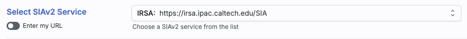
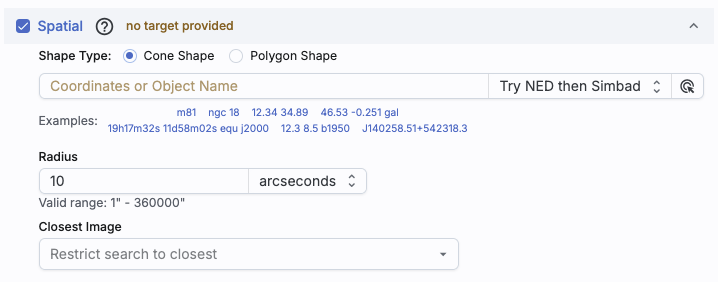
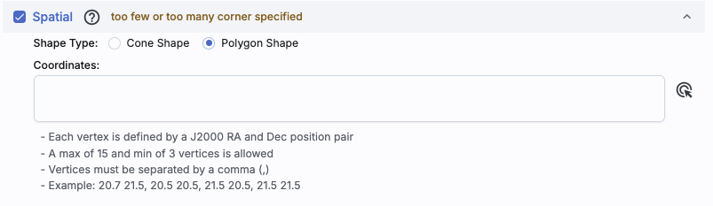
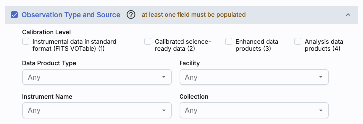
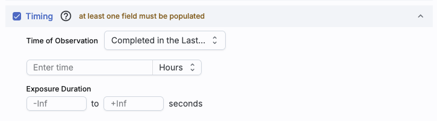
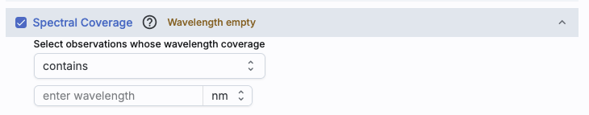
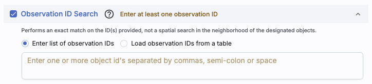

Contents of page/chapter:
+Introduction & Terminology
+General SIAv2 Search: Overview
+VO SIAv2: More about constraints
This section covers just the SIAv2 search; there is another section on images in general and the visualization tools in Firefly.
When you first go to this tab, you need to Select SIAv2
Service. This is near the top of your screen:

|
 | This is what it looks like when you do a cone search; note that you have the same name resolution options as in any other search in this tool. |
|
 | This is what it looks like when you do a polygon search. |
In both cases, you can use interactive target refinement just like for TAP searches.
|
 | This part of the interface allows you to specify the calibration level -- level 1 is relatively unprocessed and level 4 is science-ready mosaics. You can constrain the facility, instrument name, or collection as well. |
|
 | This panel provides a way to constrain the observation time of your search. This is the default option, where you want data completed in the last x hours (or other unit of time). You can alternatively specify that you want data overlapping a particular date range, in UTC or MJD times. |
|
 | This panel provides a way to constrain the spectral coverage of your search. This is the default option, where you want data containing a given wavelength. There is an alternate option, where you can specify data overlapping a particular wavelength range. |
|
 | This panel enables a search by observation ID. Note that the observation ID must match exactly for this search to be succesful. |